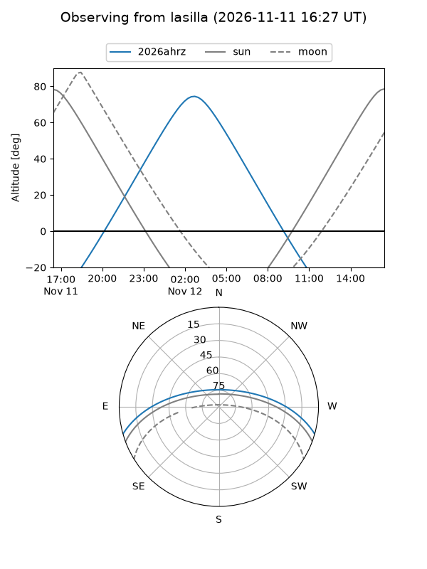
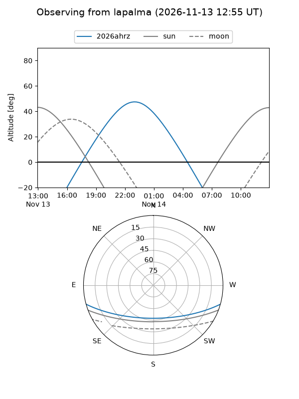
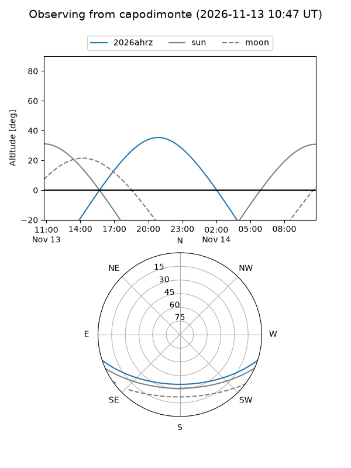
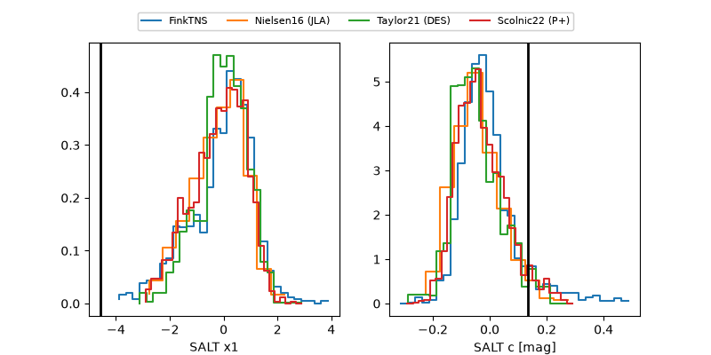

2026ahrz
Target 2026ahrz at 2026-11-12 06:18
Aliases and brokers:
FINK-ZTF: ztf.fink-portal.org/ZTF26acedida
Lasair-ZTF: lasair-ztf.lsst.ac.uk/objects/ZTF26acedida
ALeRCE-ZTF: alerce.online/object/ZTF26acedida
YSE-PZ: ziggy.ucolick.org/yse/transient_detail/2026ahrz
TNS name: wis-tns.org/object/2026ahrz
Direct TNS query: direct search
alt names
ZTF26acedida (ztf,fink_ztf)
2026ahrz (tns,yse)
Coordinates:
equatorial (ra, dec) = 19.8206,-13.90218
equatorial (HMS+DMS) = 01:19:16.95,-13:54:07.85
galactic (l, b) = (150.4803,-75.26366)
Flags:
peak dt: +2.6
Photometry:
last atlasc=18.15, atlaso=18.06, ztfg=18.06, ztfr=17.85
2 atlasc, 5 atlaso, 5 ztfg, 3 ztfr detections
Lightcurve
Visibility



Additional plots
